Chapter 2
Application Layer
Adapted from J. F. Kurose and K. W. Ross, Computer Networking: A Top-Down Approach, 8th edition.
Original slides © 1996–2020 J. F. Kurose and K. W. Ross.
Warm-Up: One Page
You open the front page of a news site. It shows text, a logo, a dozen photos, and two ads.
Vote — how many HTTP requests did your browser send?
A. One — the page is one file
B. One per photo, about 15
C. 50 to 100
D. Several hundred
Warm-Up: One Page
C or D on most commercial sites. Each image, script, stylesheet, font, and tracking pixel is a separate object with its own URL, and each object is a separate request.
Every one of those requests waits for a round trip, and some wait for a new connection first. Section 2.2 counts what that costs.
Open your browser’s developer tools (F12), pick the Network tab, and reload any page. The number at the bottom is your answer for that page.
Warm-Up: The Phone Book
You type tamusa.edu. Your laptop needs the server’s numeric IP address before it can send a single packet.
Vote — where does it get the number?
A. A list built into the OS
B. One central directory server
C. A chain of servers, asked in turn
D. It asks tamusa.edu directly
Warm-Up: The Phone Book
C. Nobody holds the whole list. Your laptop asks a nearby server, which asks a root server, a .edu server, and finally tamusa.edu’s own server, each of which knows only the next step.
Answer B was the design until 1983, and it stopped scaling. Section 2.4 shows the chain, and why caching makes it fast.
Warm-Up: Upload Costs
A 4 GB game update goes to one million players on launch day.
Vote — how should the publisher deliver it?
A. Rent servers big enough for launch day
B. Let players send pieces to each other
Both are used. With A the publisher’s upload capacity is the limit, and the cost grows with every player. With B each new player brings upload capacity of their own. Section 2.5 puts numbers on both.
Where This Chapter Goes
Goal: learn how network applications are built, by reading the protocols you already use every day.
- 2.1 Principles: architectures, sockets, what transport offers
- 2.2 The Web and HTTP
- 2.3 Electronic mail: SMTP, IMAP
- 2.4 DNS, the Internet’s directory
- 2.5 Peer-to-peer file distribution
- 2.6 Video streaming and content distribution networks
- 2.7 Socket programming with UDP and TCP
How to Read This Deck
Every slide from here on carries one of three marks.
Must Know — we do it in class; expect it on the exam. The formula, the definition, or the worked problem a question is built from. Drill these first.
Unmarked — we do it in class, and the exam can still ask about it. No mark does not mean off the exam. Understand it; just drill the Must Know slides first.
Reading — you do it on your own. Supporting detail, collected at the end of each section. Read it before the next class.
Section 2.1
Principles of Network Applications
Today’s Plan
In class
- Client-server and P2P architectures Must Know
- Processes, sockets, and addressing
- What an application needs Must Know
- What TCP and UDP provide Must Know
After class Reading
- Securing TCP with TLS
- Applications and their protocols
Creating a Network App
You write programs that run on end systems and communicate over the network: a web server talks to a browser, a mail server to a mail reader.
You write nothing for the network core. Routers and switches do not run user applications.
That is the design choice from Chapter 1 paying off: a new application needs no permission from, and no change to, the network in the middle. The Web, BitTorrent, and Zoom were all deployed this way.
Client-Server Architecture
Server: an always-on host with a permanent IP address, often in a data center so it can scale.
Clients: contact the server; may be intermittently connected; may have dynamic IP addresses; do not talk to each other directly.
Examples: HTTP, IMAP, FTP.
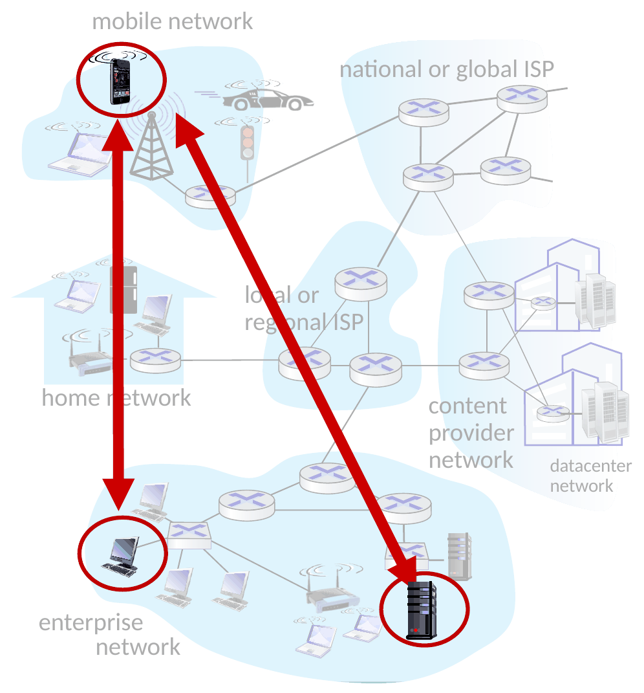
Peer-to-Peer Architecture
No always-on server. Arbitrary end systems communicate directly. Peers request service from other peers and provide service in return.
Self-scalability: a new peer brings new demand and new capacity.
Peers come and go and change IP addresses, so management is harder. Example: BitTorrent.
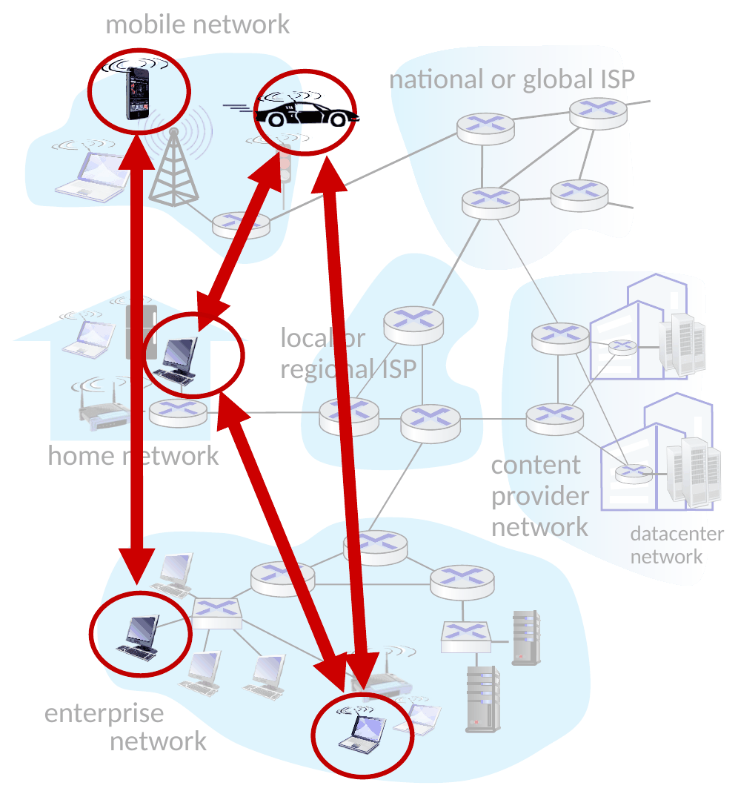
Client-Server vs P2P Must Know
| Property | Client-server | P2P |
|---|---|---|
| Always-on host, fixed address | yes | no |
| Service provided by | the server | the peers |
| Capacity as users join | fixed; paid for peak | grows per peer |
| Hosts come and go, change address | clients may | constantly |
| Examples | HTTP, IMAP, DNS | BitTorrent |
A P2P session still has a client side: the peer that asks.
Your Turn: Which One?
Vote — client-server, P2P, or both?
| Application | Architecture |
|---|---|
| Netflix streaming a movie to you | client-server |
| BitTorrent downloading a Linux image | P2P |
| Gmail in a browser | client-server |
| A Zoom call: login, then media between hosts | both |
| Bitcoin nodes relaying transactions | P2P |
| A Google search | client-server |
Processes Communicating
A process is a program running on a host. Two processes on the same host talk through inter-process communication, which the OS defines.
Processes on different hosts talk by exchanging messages.
- client process: the one that initiates the communication
- server process: the one that waits to be contacted
A P2P application has both kinds of process in the same program.
Sockets
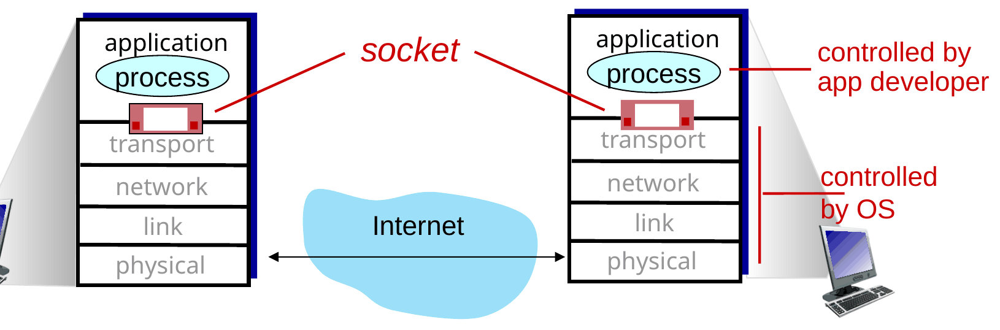
A process sends and receives messages through its socket. The socket is a door: the sender pushes a message out, and relies on the transport service on the other side to deliver it to the socket at the receiver.
The application developer controls everything above the door. The OS controls everything below it.
Addressing a Process
To receive messages, a process needs an identifier. Every host has a unique 32-bit IP address.
Is the IP address of the host enough to identify the process?
No. Many processes run on the same host. The identifier is the IP address and a 16-bit port number.
To reach the web server at gaia.cs.umass.edu: IP 128.119.245.12, port 80.
Well-Known Ports
A server that anyone may contact listens on a port number that everyone knows.
| Server | Port |
|---|---|
| HTTP | 80 |
| HTTPS | 443 |
| SMTP | 25 |
| DNS | 53 |
| IMAP | 143 |
A client’s own port is picked by its OS at the moment it first sends; nobody needs to know it in advance, because the server reads it off the arriving packet.
What a Protocol Defines
- the types of messages exchanged: request, response
- the syntax: which fields, and how they are delimited
- the semantics: what the information in each field means
- the rules for when and how a process sends and responds
Open protocols are defined in RFCs, so anyone can implement them and the implementations interoperate: HTTP, SMTP, DNS.
Proprietary protocols are not published: Zoom, most games.
What an App Needs
Data integrity. File transfer and web pages need every byte. Audio can lose some.
Timing. Telephony and interactive games need low delay to be usable.
Throughput. Video needs a minimum rate. Elastic apps use whatever they get.
Security. Encryption, integrity, authentication.
App Requirements Must Know
| Application | Loss | Throughput | Time-sensitive |
|---|---|---|---|
| File transfer | none | elastic | no |
| none | elastic | no | |
| Web documents | none | elastic | no |
| Real-time audio/video | tolerant | audio to 1 Mbps; video to 5 Mbps | yes, tens of ms |
| Streaming stored video | tolerant | as above | yes, a few seconds |
| Interactive games | tolerant | kbps and up | yes, tens of ms |
TCP vs UDP Service Must Know
TCP
- reliable delivery between the two processes
- flow control: the receiver is never overrun
- congestion control: slow down when the network is overloaded
- connection-oriented: setup first
UDP
- unreliable datagrams
- no flow control, no congestion control, no setup
Neither provides timing, minimum throughput, or security.
Why Is There a UDP?
Vote — if TCP does more, why would an app ever choose UDP?
A. Legacy; nobody chooses it anymore
B. No handshake, no retransmission delay
B. A one-packet request gets its answer without first spending a round trip on connection setup, and a late packet is never held back to wait for a lost one. DNS, VoIP, and games pick UDP for exactly those reasons.
The app then handles loss itself: DNS simply asks again.
Protocol and Transport
| Application | Application protocol | Transport |
|---|---|---|
| File transfer | FTP | TCP |
| SMTP | TCP | |
| Web | HTTP | TCP |
| Name lookup | DNS | UDP |
| Streaming video | HTTP, DASH | TCP |
| Internet telephony | SIP, RTP, or proprietary | UDP or TCP |
HTTP, SMTP, and IMAP all chose TCP: a missing byte corrupts a page, a message, or a mailbox, and none of them cares about a few extra milliseconds.
Read After Class
Section 2.1 — supporting material
- Securing TCP with TLS
- Applications and their protocols, with RFC numbers
Securing TCP Reading
Plain TCP and UDP sockets carry no encryption. A password typed into a plain socket crosses the Internet in cleartext.
Transport Layer Security (TLS) adds encryption, data integrity, and end-point authentication on top of TCP. It is implemented in the application layer: the app calls a TLS library, and the library calls TCP. Cleartext goes into the TLS socket; ciphertext goes onto the wire.
HTTPS is HTTP over TLS, on port 443. Chapter 8 covers how the keys are agreed.
Apps and Protocols Reading
| Application | Protocol | RFC | Transport |
|---|---|---|---|
| File transfer | FTP | 959 | TCP |
| SMTP | 5321 | TCP | |
| Web | HTTP/1.1 | 7230 | TCP |
| Web | HTTP/2 | 7540 | TCP |
| Name lookup | DNS | 1035 | UDP |
| Mail access | IMAP | 3501 | TCP |
| Telephony | SIP, RTP | 3261, 3550 | UDP or TCP |
Every one of these documents is public and free. When a header line on a later slide looks arbitrary, the RFC says why it is there.
Section 2.2
The Web and HTTP
Today’s Plan
In class
- Objects, URLs, HTTP over TCP
- Response time Must Know
- HTTP messages Must Know
- Cookies Must Know
- Caches, conditional GET Must Know
- HTTP/2 frames Must Know
After class Reading
- The Web’s origins
- Cookies and privacy
- Where caches are installed
- HTTP/3
A Page Is a Set of Objects
A web page consists of objects, each of which can live on a different server: an HTML file, a JPEG image, a script, a font, an audio clip.
The base HTML file references the other objects, each by its own URL:
www.someschool.edu/someDept/pic.gif
└─────────┬──────┘└──────┬──────┘
host name path nameThe browser fetches the base file, parses it, and then fetches every referenced object. Your warm-up count was the number of objects.
Your Turn: Parse a URL
Name each part of
https://www.tamusa.edu:443/academics/index.html?dept=cs
| Part | Value |
|---|---|
| scheme (protocol) | https |
| host name | www.tamusa.edu |
| port | 443, the default for HTTPS, usually omitted |
| path | /academics/index.html |
| query, sent to the server | dept=cs |
HTTP Overview
HTTP, the hypertext transfer protocol, is the Web’s application layer protocol.
Client: the browser. It requests, receives, and displays Web objects.
Server: sends objects in response to requests.
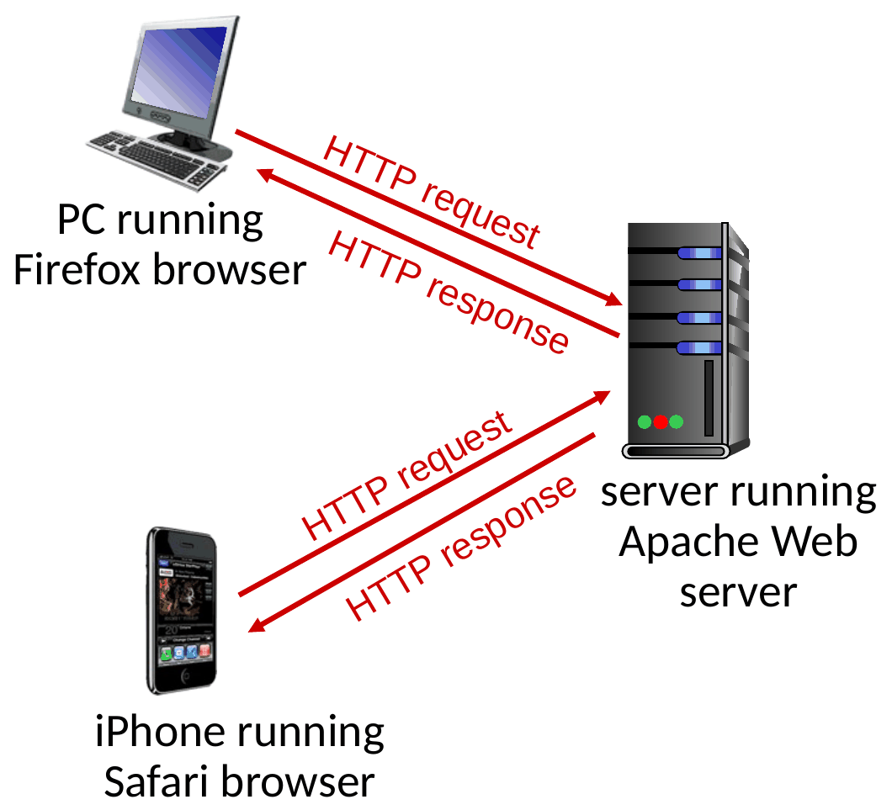
HTTP Uses TCP
- The client opens a TCP connection to the server, port 80.
- The server accepts it.
- HTTP messages are exchanged between browser and server.
- The connection is closed.
HTTP is stateless. The server keeps no information about past client requests.
Protocols that keep state are harder: the history must be stored, and after a crash the two sides’ views must be reconciled. Cookies add state back on top of HTTP.
Two Kinds of Connection
Non-persistent HTTP
- TCP connection opened
- at most one object sent
- TCP connection closed
Ten objects need ten connections.
Persistent HTTP
- TCP connection opened
- many objects sent over the one connection
- TCP connection closed
HTTP/1.1’s default.
Non-Persistent HTTP
The user enters www.someSchool.edu/someDepartment/home.index, an HTML file that references 10 JPEG images.
1a. The client opens a TCP connection to www.someSchool.edu, port 80. 1b. The server, waiting on port 80, accepts and notifies the client.
2. The client sends an HTTP request naming someDepartment/home.index into its socket.
3. The server receives the request, builds a response containing the object, and sends it into its socket.
Non-Persistent HTTP
4. The server closes the TCP connection.
5. The client receives the response, displays the HTML, and while parsing it finds the 10 referenced JPEG objects.
6. Steps 1–5 are repeated for each of the 10 images.
Eleven objects, eleven connections. The next slide prices one of them.
Response Time Must Know
RTT: a small packet’s time from client to server and back.
- one RTT to open the TCP connection
- one RTT for the request and the first bytes back
- then the transmission time
\[\text{non-persistent} = 2\,RTT + \frac{L}{R}\]
Persistent HTTP
What non-persistent costs: 2 RTTs per object, plus OS overhead for every TCP connection. Browsers compensate by opening several parallel connections.
Persistent HTTP (HTTP/1.1): the server leaves the connection open after a response; later requests to the same server reuse it. Each object then costs 1 RTT.
With pipelining, the client sends a request as soon as it sees a referenced object, without waiting for earlier responses. All the referenced objects can arrive after as little as one RTT total.
Your Turn: RTT Count Must Know
Example: You click a link. Your DNS cache is empty; resolving the name visits three DNS servers with round-trip times 30, 50, and 20 ms. The RTT to the web server is 40 ms. The page is a small HTML file that references four small images on the same server. Ignore transmission times.
(a) How long until the HTML file arrives?
Solution: DNS \(30 + 50 + 20 = 100\) ms. TCP handshake \(40\) ms. Request and response \(40\) ms.
\[100 + 40 + 40 = \mathbf{180\ ms}\]
Your Turn: RTT Count Must Know
(b) How long until all four images have also arrived?
| Connection style | Extra cost | Total |
|---|---|---|
| non-persistent, one at a time | \(4 \times 2 \times 40\) | 500 ms |
| non-persistent, four in parallel | \(1 \times 2 \times 40\) | 260 ms |
| persistent, no pipelining | \(4 \times 40\) | 340 ms |
| persistent, pipelined | \(1 \times 40\) | 220 ms |
Why It Matters: Parallel
A browser behind a 2 Mbps link fetches ten 400,000-bit objects; RTT is 20 ms. Each object takes \(0.2\) s to transmit.
Vote — do ten parallel connections make the page load ten times faster?
| Style | Time |
|---|---|
| non-persistent, one at a time | \(10 \times (0.04 + 0.2) = 2.40\ \text{s}\) |
| non-persistent, ten in parallel | \(0.04 + 10 \times 0.2 = 2.04\ \text{s}\) |
| persistent, pipelined | \(0.02 + 10 \times 0.2 = 2.02\ \text{s}\) |
Parallel connections hide round-trip waits. Here transmission dominates, and ten connections share the same 2 Mbps.
HTTP Request Message Must Know
Two message types, request and response, both in ASCII. A request:
GET /index.html HTTP/1.1\r\n
Host: www-net.cs.umass.edu\r\n
User-Agent: Mozilla/5.0 (X11; Linux x86_64) Firefox/128.0\r\n
Accept-Language: en-us,en;q=0.5\r\n
Connection: keep-alive\r\n
\r\nThe request line carries the method, the URL, and the version. Each header line is a name, a colon, and a value. \r\n is a carriage return and a line feed. A line holding only \r\n ends the headers.
Request Format
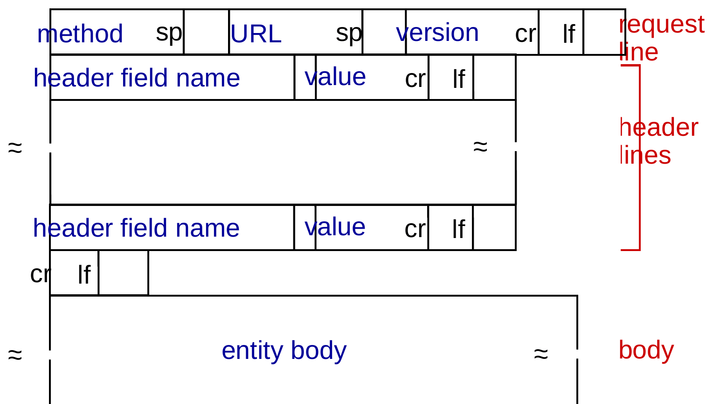
The body follows the blank line. A GET has an empty body; a POST carries form input there.
Request Methods
GET asks for the object at the URL. Form data can ride in the URL after a ?: www.somesite.com/animalsearch?monkeys&banana
POST sends the user’s input in the message body. Use it when the input is large or should not appear in the address bar.
HEAD returns only the headers that a GET would return. Useful for checking whether an object exists or when it changed, without fetching it.
PUT uploads an object to the URL, replacing what is there.
Your Turn: Read It
GET /courses/cs4306/index.html HTTP/1.1\r\n
Host: www.example.edu\r\n
If-Modified-Since: Tue, 02 Sep 2026 14:10:00 GMT\r\n
Connection: close\r\n
\r\n| Question | Answer |
|---|---|
| Full URL requested? | http://www.example.edu + /courses/cs4306/index.html |
| Persistent connection wanted? | no: Connection: close |
Your Turn: Read It
GET /courses/cs4306/index.html HTTP/1.1\r\n
Host: www.example.edu\r\n
If-Modified-Since: Tue, 02 Sep 2026 14:10:00 GMT\r\n
Connection: close\r\n
\r\n| Question | Answer |
|---|---|
| Does the browser have a cached copy? | yes: If-Modified-Since makes this conditional |
| The browser’s IP address? | not here; it is in the IP header, not in HTTP |
HTTP Response Must Know
HTTP/1.1 200 OK\r\n
Date: Sun, 26 Sep 2010 20:09:20 GMT\r\n
Server: Apache/2.0.52 (CentOS)\r\n
Last-Modified: Tue, 30 Oct 2007 17:00:02 GMT\r\n
Content-Length: 2652\r\n
Content-Type: text/html; charset=ISO-8859-1\r\n
Connection: Keep-Alive\r\n
\r\n
data data data data data ...The status line carries the version, a status code, and a phrase. Date: is when the response was generated; Last-Modified: is when the object last changed. Content-Length: counts the body’s bytes.
Status Codes
1xx info, 2xx success, 3xx redirect, 4xx client error, 5xx server error.
| Code | Meaning |
|---|---|
200 OK |
request succeeded; the object follows |
301 Moved Permanently |
new URL in the Location: header |
304 Not Modified |
cached copy is still current; no body |
400 Bad Request |
the server could not parse the request |
404 Not Found |
no object at that URL |
505 HTTP Version Not Supported |
the server does not speak that version |
Activity: HTTP by Hand
On your CloudLab VM — 8 minutes
nc -C example.com 80
GET / HTTP/1.1
Host: example.com
Connection: close- Type the four lines, then press Enter once more on an empty line.
- In the reply, find the status line,
Content-Length:, and the blank line that ends the headers.
Activity: HTTP by Hand
On your CloudLab VM — continued
- Change
/to/nothing.html. What code comes back? - Leave out the
Host:line. What happens, and why would a server that hosts many sites need it?
One machine can serve many sites from one address; Host: is how the server knows which one you meant. Without it, HTTP/1.1 servers answer 400 Bad Request.
Cookies Must Know
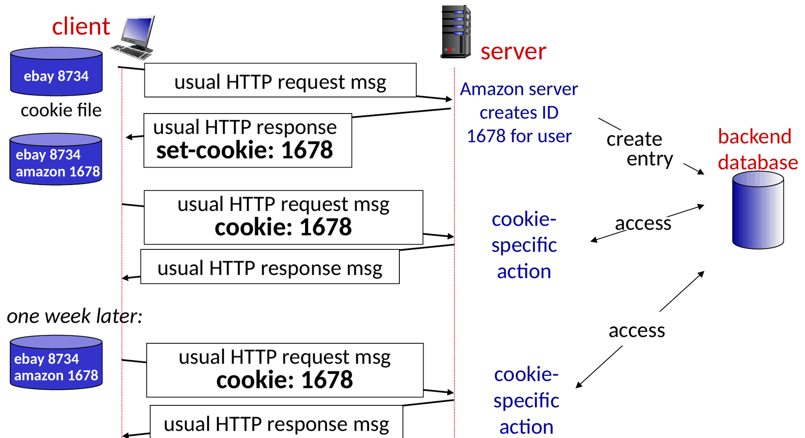
The first response carries Set-cookie: 1678. Every later request to that site carries Cookie: 1678, and the server looks 1678 up.
Cookies Must Know
Web sites and browsers use cookies to keep some state across requests. Four components:
- a
Set-cookie:header line in the HTTP response - a
Cookie:header line in later HTTP requests - a cookie file on the user’s host, managed by the browser
- a back-end database at the web site, keyed by the cookie value
Used for authorization, shopping carts, recommendations, and session state in web mail.
A cookie identifies a browser, not a person.
Web Caches
Goal: satisfy the client’s request without involving the origin server.
The browser is configured to send every request to the cache (a proxy server). If the object is there, the cache returns it. If not, the cache fetches it from the origin, keeps a copy, and returns it.
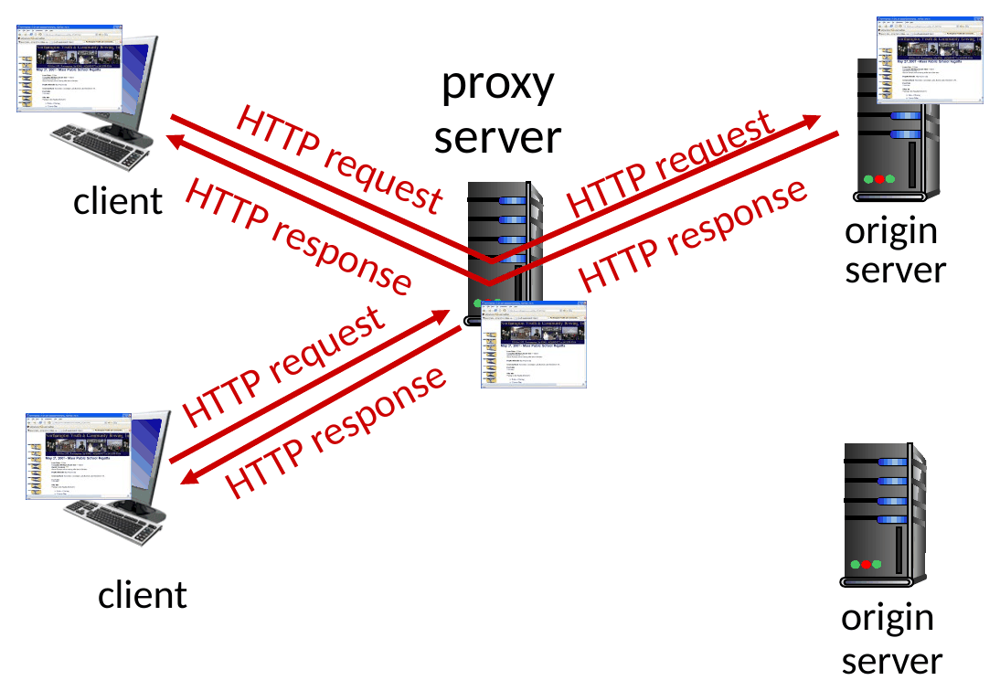
The cache is a server to the browser and a client to the origin.
Why Cache?
Shorter response time for the client: the cache is close.
Less traffic on the institution’s access link, which is usually the expensive, congested one.
Caches are typically installed by the ISP: a university, a company, a residential provider. The Internet is dense with them, and they let a small content provider serve a large audience.
Caching Example
Scenario
- access link 1.54 Mbps, LAN 1 Gbps
- RTT from the institution’s router to any origin server: 2 s
- objects average 100 kbits, requested at 15 per second
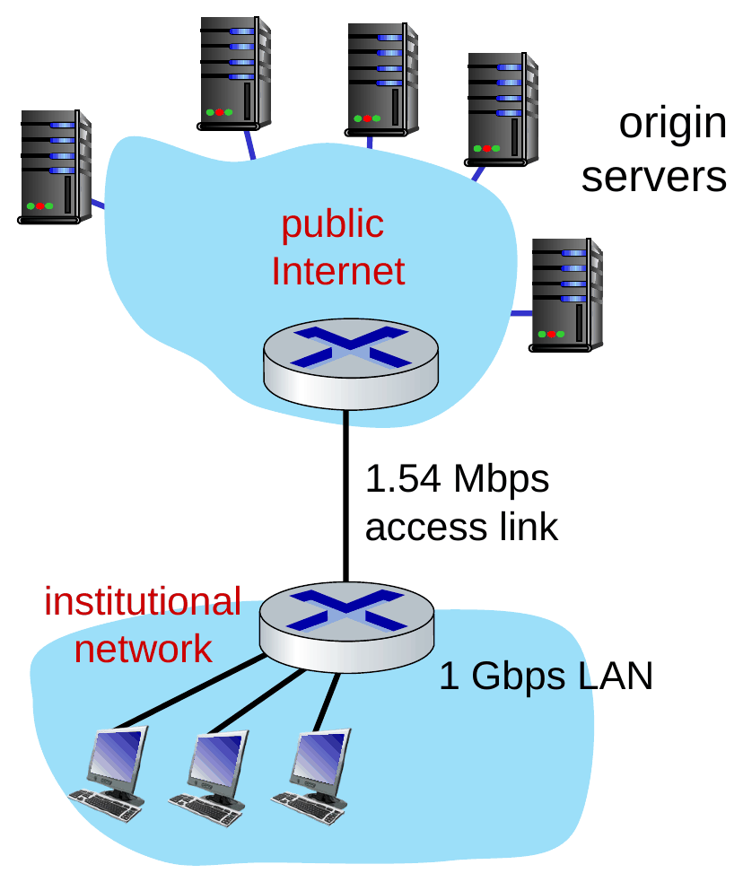
Every object crosses both links, so each carries \(La = 15/\text{s} \times 100{,}000\ \text{bits} = 1.5\) Mbps.
Caching Example
Traffic intensity on each link, with \(La = 1.5\) Mbps:
| Link | Rate \(R\) | Intensity \(La/R\) |
|---|---|---|
| LAN | 1 Gbps \(=\) 1,000 Mbps | \(1.5 / 1{,}000 = 0.0015\) |
| access link | 1.54 Mbps | \(1.5 / 1.54 = \mathbf{0.97}\) |
The LAN is almost idle. Intensity near 1 means the access-link queue grows without bound (Section 1.4), so the access link is the problem.
Caching Example
The delay of one request is the sum of three parts. Each link cell gives the intensity, then the delay it causes.
| Part | Today | 154 Mbps link |
|---|---|---|
| Internet RTT | 2 s | 2 s |
| access link | 0.97: minutes | \(1.5/154 = 0.0097\): ms |
| LAN | 0.0015: \(\mu\)s | 0.0015: \(\mu\)s |
| total | minutes | about 2 s |
Option 1: buy a 154 Mbps link.
The total drops to the 2 s round trip, but the faster link is expensive.
Caching Example
Option 2: install a cache. Suppose the hit rate is 0.4.
- 40% hits: the cache answers over the 1 Gbps LAN in about 10 ms.
- 60% misses: the access link now carries \(0.6 \times 1.5\) Mbps \(= 0.9\) Mbps, so its intensity is \(0.9 / 1.54 = \mathbf{0.58}\).
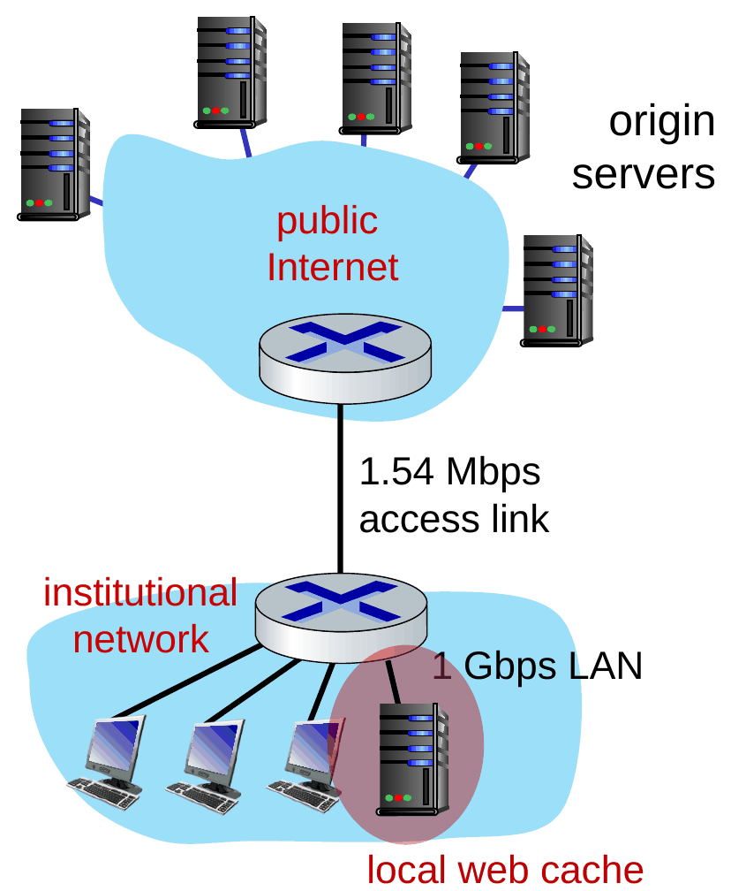
Intensity \(0.58\) is well below 1, so the access-link queue stays short.
Caching Example
Average delay with the cache. Each request is either a hit or a miss.
| Request | Share | Delay |
|---|---|---|
| hit | \(0.4\) | about 10 ms, served over the LAN |
| miss | \(0.6\) | 2 s Internet + about 10 ms access link \(= 2.01\) s |
\[0.6 \times 2.01\ \text{s} + 0.4 \times 0.01\ \text{s} \approx \mathbf{1.2\ s}\]
The 154 Mbps link gives about 2 s: every request still makes the 2 s round trip. With the cache, 40% of requests skip it, at far lower cost.
Your Turn: Cache It? Must Know
Example: An institution’s access link is 20 Mbps. Browsers request objects at 40 per second; the average object is 400,000 bits. The Internet round trip is 2 s. Access-link delay is \(\Delta / (1 - \Delta\beta)\): \(\Delta\) is the time to send one object, \(\beta\) the request rate on the link.
(a) Intensity and average response time today?
- Send one object: \(\Delta = 400{,}000\ \text{bits} / (20 \times 10^{6}\ \text{bits/s}) = 0.02\) s.
- Intensity: \(\Delta\beta = 0.02\ \text{s} \times 40/\text{s} = 0.8\).
- Access delay: \(0.02 / (1 - 0.8) = 0.1\) s.
- Total: \(2\ \text{s} + 0.1\ \text{s} = \mathbf{2.1\ s}\).
Your Turn: Cache It? Must Know
Same traffic: 40 objects/s of 400,000 bits, 2 s round trip.
(b) Upgrade the link to 100 Mbps?
- Send one object: \(\Delta = 400{,}000 / (100 \times 10^{6}) = 0.004\) s.
- Intensity: \(\Delta\beta = 0.004 \times 40 = 0.16\).
- Access delay: \(0.004 / (1 - 0.16) = 0.0048\) s.
- Total: \(2 + 0.0048 \approx \mathbf{2.005\ s}\).
Your Turn: Cache It? Must Know
(c) Keep the 20 Mbps link and install a cache with a 60% hit rate; hits take no time.
- Only misses cross the link: \(\beta = 0.4 \times 40 = 16\) per second.
- Intensity: \(\Delta\beta = 0.02 \times 16 = 0.32\).
- Access delay: \(0.02 / (1 - 0.32) = 0.029\) s, so a miss takes \(2.029\) s.
- Average: \(0.6 \times 0 + 0.4 \times 2.029 \approx \mathbf{0.81\ s}\).
The faster link removes only the \(0.1\) s of access delay. The cache removes the \(2\) s Internet delay for 60% of requests.
Conditional GET
Goal: do not send the object if the cache’s copy is current.
The cache puts the date of its copy in the request: If-modified-since: <date>
Unchanged: the server answers 304 Not Modified with no body. Changed: 200 OK and the new object.
Browsers do the same with their own cache. A 304 costs one RTT and no transmission.
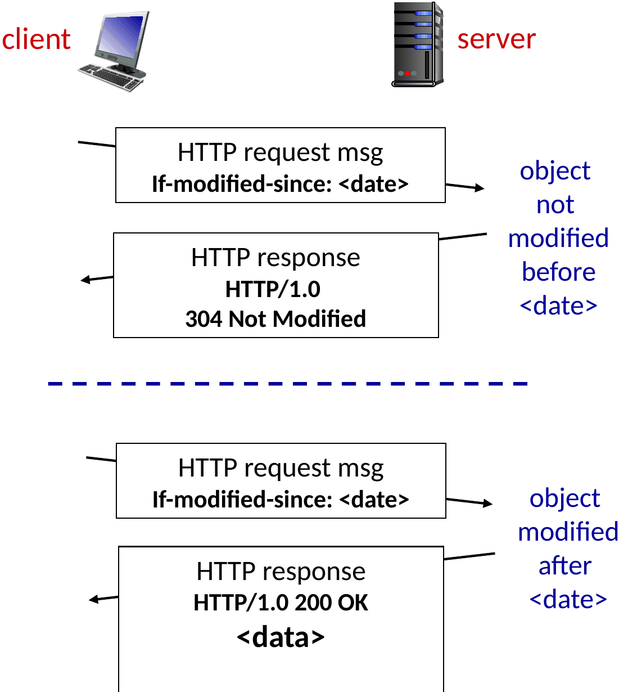
Head-of-Line Blocking
Key goal of HTTP/2: less delay when a page has many objects.
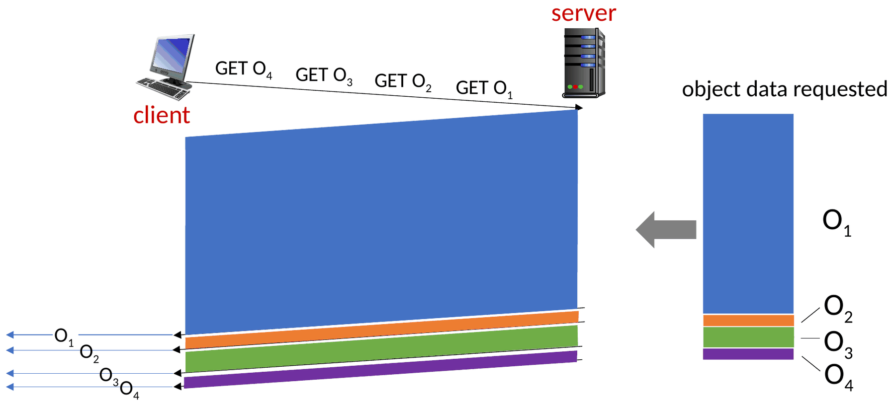
HTTP/1.1 pipelining sends the GETs on one connection, but the server answers in order. Objects 2, 3, and 4 wait behind the large object 1: head-of-line (HOL) blocking.
HTTP/2 Frames Must Know
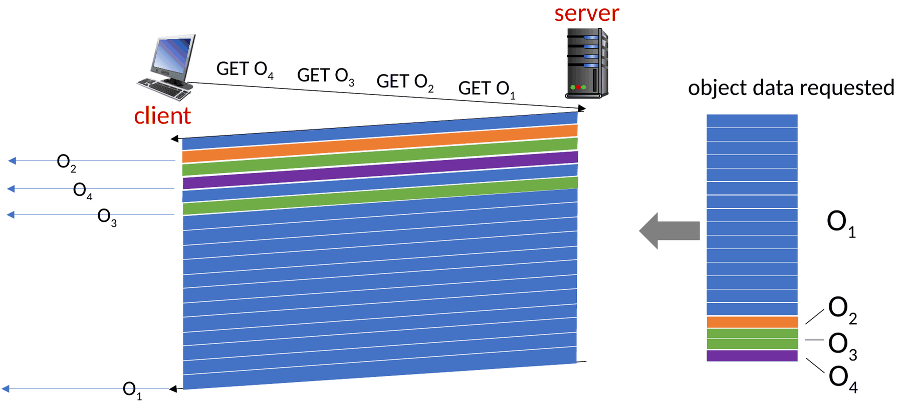
HTTP/2 (RFC 7540, 2015) keeps the methods, status codes, and headers of 1.1, but the server divides each object into frames and interleaves them. The small objects finish early; the large one is barely delayed.
It can also follow a client-set priority and push objects not yet requested.
Your Turn: Frames Must Know
Example: A page has one video clip of 1200 frames and three images of 4 frames each, all over one HTTP/2 connection. A frame time is the time to send one frame.
| Server strategy | Images complete after |
|---|---|
| video first, then the images | \(1200 + 12 = 1212\) frame times |
| round-robin across the four objects | \(4 \times 4 = 16\) frame times |
| images given priority | \(12\) frame times |
Round-robin: a round is one frame of each object, four frame times; the images need four rounds. The video finishes at 1212 in every case.
Read After Class
Section 2.2 — supporting material
- The Web’s origins
- Cookies and privacy
- Where caches are installed
- HTTP/3
The Web’s Origins Reading
In 1945 Vannevar Bush described the memex, a desk that would store all of a person’s books and records and link them by association. The idea got the name hypertext in the 1960s.
Tim Berners-Lee, a physicist at CERN, needed distributed access to data and built the Web to get it: the first HTTP client and server in 1990, then HTTP/0.9 (a bare GET), HTTP/1.0 (headers, status codes, simple caching; written down as RFC 1945 in 1996), and HTTP/1.1 (persistent connections, pipelining, the Host: header, conditional requests; RFC 2068 in 1997).
HTTP/2 arrived in 2015 and HTTP/3 in 2022. The request line you typed in the activity is the HTTP/1.1 one.
Cookies and Privacy Reading
Cookies let a site learn a great deal about what you do on that site. That is what they are for.
Third-party cookies go further. When a page embeds an advertiser’s image, the advertiser’s server sets its own cookie in your browser. Every other page that embeds the same advertiser then sends that cookie back, so one identity is tracked across many unrelated sites.
The protocol offers two ways to keep state: at the endpoints, where each side remembers the transaction so far, or in the messages, which is what cookies do. HTTP chose the second so that the server could stay stateless.
Where Caches Live Reading
A university or company installs a cache at its access link, where a hit saves the link’s capacity and the Internet round trip. A residential ISP does the same for its subscribers.
Content delivery networks (Section 2.6) are caches too, run by a third party and placed inside many ISPs at once. A small content provider that cannot afford a global set of servers rents room in one, and its objects are served from a cache near the reader.
Two things a cache must handle: an object that changed at the origin (the conditional GET) and an object that must not be cached at all, which the origin marks with a Cache-Control: no-store header.
HTTP/3 Reading
HTTP/2 runs over one TCP connection, so a single lost segment stalls every object on it while TCP retransmits. Browsers still open parallel connections to reduce the stalling, and plain TCP carries no security.
HTTP/3 moves to QUIC, a transport built on UDP, with per-object error and congestion control and TLS built in. One lost packet delays only the object it belonged to. Chapter 3 returns to QUIC.
Section 2.3
Electronic Mail
Today’s Plan
In class
- User agents, mail servers, SMTP
- The SMTP dialogue Must Know
- SMTP compared with HTTP Must Know
- Mail access: IMAP and web mail
After class Reading
- The message format and MIME
- Trying SMTP by hand
Three Components
User agents, also called mail readers: Outlook, Thunderbird, the Gmail page. Compose, edit, read.
Mail servers: each user’s mailbox of incoming messages, plus a queue of outgoing messages waiting to be sent.
SMTP, the protocol between mail servers. The sending server is the client; the receiving server is the server.
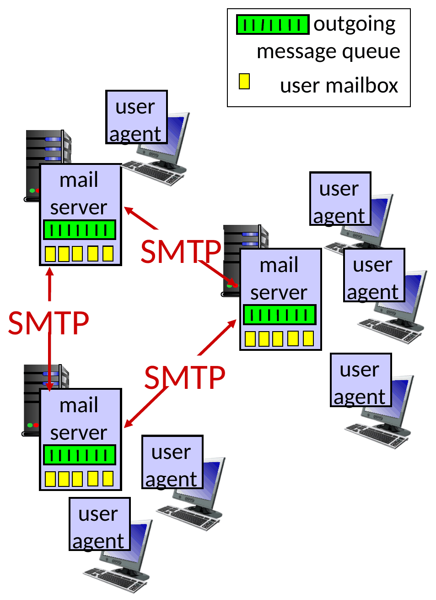
Alice Sends to Bob
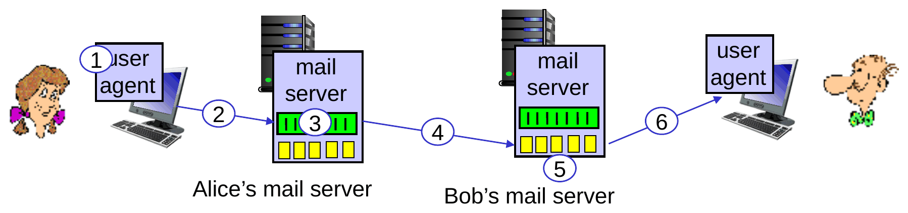
1. Alice composes a message to bob@someschool.edu. 2. Her user agent hands it to her mail server, which queues it.
3. The client side of SMTP on her server opens a TCP connection to Bob’s server. 4. It sends the message over that connection.
5. Bob’s server puts the message in Bob’s mailbox. 6. Bob’s user agent fetches it.
SMTP: RFC 5321
- uses TCP, port 25, to move a message reliably from the sending server to the receiving server
- direct transfer: no intermediate servers
- three phases: handshake (greeting), transfer of messages, closure
- command/response interaction, as in HTTP: commands are ASCII text, responses are a status code and a phrase
- the message itself must be 7-bit ASCII
SMTP Dialogue Must Know
alice@crepes.fr writes to bob@hamburger.edu. S: is Bob’s server, C: is Alice’s server.
S: 220 hamburger.edu
C: HELO crepes.fr
S: 250 Hello crepes.fr, pleased to meet youC: MAIL FROM: <alice@crepes.fr>
S: 250 alice@crepes.fr... Sender ok
C: RCPT TO: <bob@hamburger.edu>
S: 250 bob@hamburger.edu ... Recipient okSMTP Dialogue Must Know
C: DATA
S: 354 Enter mail, end with "." on a line by itself
C: Do you like ketchup?
C: How about pickles?
C: .
S: 250 Message accepted for deliveryC: QUIT
S: 221 hamburger.edu closing connectionA line holding only a period ends the body. Counting the TCP handshake and each command/reply pair as one RTT, 5 RTTs pass before the first byte of the body can be sent: handshake, HELO, MAIL FROM, RCPT TO, DATA.
SMTP vs HTTP Must Know
| HTTP | SMTP | |
|---|---|---|
| Transport | TCP, port 80 | TCP, port 25 |
| Direction | pull: the receiver asks | push: the sender initiates |
| Body must be | anything; binary is fine | 7-bit ASCII |
| End of body marked by | Content-Length: |
a line with only a period |
| Several objects | one response message each | one multipart message |
A binary body may contain a lone period; ASCII bodies escape it.
Envelope and Message
MAIL FROM: and RCPT TO: are SMTP commands: the envelope that Alice’s server hands to Bob’s. RFC 5321 defines them.
From:, To:, and Subject: are header lines inside the message, which SMTP carries as data without reading. RFC 5322 defines them, the way HTML is defined separately from HTTP.
From: alice@crepes.fr
To: bob@hamburger.edu
Subject: lunch
<- blank line
Do you like ketchup?The two need not agree. Spam relies on that.
Mail Access Protocols
SMTP delivers a message to the receiver’s server and stores it there. Fetching it is a pull, so it needs a different protocol.
IMAP (RFC 3501): messages stay on the server; the client reads, deletes, and files them into folders there. HTTP: Gmail and Outlook.com put a web page in front of SMTP (to send) and IMAP or their own store (to read).
Your Turn: Trace the Path
Alice uses Gmail in a browser; Bob reads mail in Thunderbird over IMAP.
| Hop | Protocol |
|---|---|
| Alice’s browser \(\to\) Gmail’s mail server | HTTP(S) |
| Gmail’s server \(\to\) Bob’s university server | SMTP |
| Bob’s Thunderbird \(\to\) Bob’s server | IMAP |
Thunderbird cannot fetch with SMTP: SMTP is push, and a reader needs to pull.
Alice’s photo travels base64-encoded, with MIME headers saying so, because SMTP bodies must be 7-bit ASCII.
Activity: Read the Headers
On your own mail — 6 minutes
Open any message you received this week and show its raw source (Gmail: the three-dot menu, Show original; Outlook: View message source).
- Count the
Received:lines, one per SMTP hop, newest on top. How many servers handled the message? - Compare the
From:header with the envelope sender inReturn-Path:. Same address? - Find
Content-Type:. Plain text, HTML, ormultipart?
Read After Class
Section 2.3 — supporting material
- The message format and MIME
- Trying SMTP by hand
MIME Reading
RFC 5322 defines the message: header lines, a blank line, then the body. Every header line is Name: value, and the body is ASCII.
Anything that is not ASCII text rides inside that body using MIME (RFC 2045). Two header lines do the work:
Content-Type: image/jpeg
Content-Transfer-Encoding: base64Base64 turns every 3 bytes into 4 ASCII characters, so an attachment grows by a third in transit. A message with text and a photo is a multipart/mixed body, with a boundary string separating the parts.
Trying SMTP by Hand Reading
You can type the SMTP dialogue yourself:
You will see the 220 greeting; then type HELO, MAIL FROM:, RCPT TO:, DATA, the message, a lone ., and QUIT. Nothing about the protocol checks that MAIL FROM: is you.
Most servers now refuse port 25 from an unknown host, and campus and home ISPs often block it outright, because of what the previous sentence allows. Sending mail from a client today uses port 587 with authentication and TLS.
Section 2.4
DNS: The Internet’s Directory
Today’s Plan
In class
- What DNS provides, and why it is distributed
- Root, TLD, authoritative, and local servers
- Iterated and recursive queries Must Know
- Caching and TTLs Must Know
- Resource records Must Know
After class Reading
- Before DNS:
hosts.txt - The root servers
- DNS message format
- Registering a domain
- Reverse lookups
- Attacks on DNS
Names and Addresses
People have several identifiers: a name, a passport number, a student ID. Internet hosts have two: a 32-bit IP address, which routers use to forward datagrams, and a hostname such as cs.umass.edu, which people use.
The Domain Name System maps between them. It is a distributed database implemented in a hierarchy of many name servers, plus an application-layer protocol by which hosts and servers talk to resolve names.
A core Internet function, implemented at the network’s edge as an ordinary application. Nothing in a router knows a hostname.
What DNS Provides
Hostname to IP address translation. The one everybody uses.
Host aliasing. A canonical name such as proxy-ext.tamusa.edu can have friendlier aliases such as www.tamusa.edu.
Mail server aliasing. Mail for @tamusa.edu is delivered to a server with a different name; DNS says which.
Load distribution. A busy site has many replicated servers; one name maps to a set of addresses, and DNS rotates the order it returns them in.
Why Not Centralize?
Vote — one big DNS server for the whole Internet. What goes wrong first?
A. It fails, and everything stops
B. It cannot handle the traffic
C. Every lookup crosses the planet
D. Nobody could keep it up to date
All four. Single point of failure, traffic volume, distance, and maintenance of a database that changes every second. A centralized design does not scale, so DNS is distributed and hierarchical.
A Hierarchy of Servers
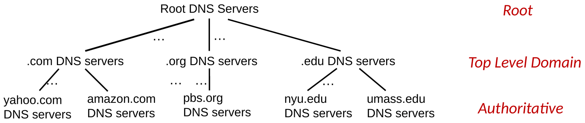
A client wanting the address of www.amazon.com, to a first approximation:
- asks a root server to find the
.comDNS server - asks the
.comTLD server to find theamazon.comDNS server - asks the
amazon.comauthoritative server forwww.amazon.com
Three Kinds of Server
Root servers. The contact of last resort for a name server that cannot resolve a name. 13 logical servers, each replicated many times around the world; ICANN manages the root.
Top-level domain (TLD) servers. Responsible for .com, .org, .net, .edu, and the country domains .uk, .fr, .jp. Educause runs .edu; Verisign runs .com.
Authoritative servers. An organization’s own DNS servers, holding the definitive name-to-address records for its hosts. Run by the organization or by a provider it pays.
The Local DNS Server
Not part of the hierarchy. Every ISP, company, and university runs one; your host learns its address when it joins the network, and sends every query there first. Also called the default name server.
It keeps a cache of recent name-to-address answers, which can be out of date.
When the answer is not cached, it acts as a proxy and forwards the query into the hierarchy on your behalf. The next two slides show how.
Iterated Query Must Know
A host at engineering.nyu.edu wants the address of gaia.cs.umass.edu.
Each server answers with the name of the next server to ask.
8 messages, all through the local server.
Recursive Query
Same lookup, but each server resolves the name itself before answering.
The answer returns down the same chain.
Still 8 messages, but root and TLD now work for every lookup, so recursion is used only from host to local server.
Caching
Once any name server learns a mapping, it caches it. Each record carries a TTL set by the authoritative server; the cache discards it when the TTL expires.
TLD server addresses are almost always cached at the local server, so root servers are rarely visited.
A cached entry can be stale: if a host changes its address, the old mapping lingers until every cached copy expires. DNS is best-effort translation.
Caching also lets one user’s lookup speed up another’s: your neighbor resolved tamusa.edu a minute ago, so your query never leaves campus.
Your Turn: DNS Cache Must Know
Example: A local DNS server starts with an empty cache and caches every record it receives for 30 time units. Every one-way message takes 1 unit; queries into the hierarchy are iterative. Hosts ask the local server for www.x.org at \(t = 0\), www.y.org at \(t = 12\), ftp.x.org at \(t = 20\), and www.x.org again at \(t = 50\).
For each request, which servers does the local server contact, and when does the host get its answer?
Your Turn: DNS Cache Must Know
A full resolution is 8 one-way messages, so 8 units.
| \(t\) | Name | Contacts | Answer |
|---|---|---|---|
| 0 | www.x.org |
root, TLD, auth | \(t = 8\) |
| 12 | www.y.org |
TLD, auth (TLD cached at 3, to 33) | \(t = 18\) |
| 20 | ftp.x.org |
auth only (x.org NS cached at 5, to 35) |
\(t = 24\) |
| 50 | www.x.org |
root, TLD, auth (all expired by 37) | \(t = 58\) |
DNS Records Must Know
The database holds resource records (name, value, type, ttl).
| Type | name |
value |
|---|---|---|
| A | a hostname | its IPv4 address |
| NS | a domain, e.g. foo.com |
hostname of an authoritative server for it |
| CNAME | an alias | the canonical (real) hostname |
| MX | a domain | canonical name of its mail server |
Two Records per Referral
A TLD server answering for gaia.cs.umass.edu returns two records:
(umass.edu, dns.umass.edu, NS)
(dns.umass.edu, 128.119.40.111, A)The NS record names the authoritative server. The A record gives that server’s address. Without the second, the local server would have to resolve dns.umass.edu before it could ask it anything.
Your Turn: Which Record?
Vote — which record type answers each need?
| Need | Record |
|---|---|
| The IP address of a host | A |
www.tamusa.edu is an alias for another hostname |
CNAME |
Who accepts mail for @tamusa.edu |
MX |
The .edu TLD’s referral for tamusa.edu |
NS, plus an A record |
Web and mail for foo.com on different machines |
MX for mail; A or CNAME for web |
Activity: Trace a Name
On your CloudLab VM — 8 minutes
Watch an iterated resolution happen, one referral at a time:
- Find the three referral stages: the root’s list of
.eduservers, the.eduserver’s list oftamusa.eduservers, and the final answer. Which TTL is largest, and why does that make sense?
Activity: Trace a Name
On your CloudLab VM — continued
- Run
dig www.tamusa.eduand read theANSWER SECTION. Is there aCNAMEline before theAline? - Run
dig www.google.comtwice, a minute apart. Does the TTL on theArecords count down between runs? Which server answered you (theSERVER:line at the bottom)?
The second run is answered from the local server’s cache, and the TTL you see is what is left of the authoritative server’s TTL.
Read After Class
Section 2.4 — supporting material
- Before DNS:
hosts.txt - The root servers
- The DNS message
- Registering a domain
- Reverse lookups
- Attacks on DNS, and cache poisoning
Before DNS Reading
Until 1983 the whole mapping lived in one file, hosts.txt, kept by the Network Information Center at SRI. To add a host you emailed the center; every site downloaded the new file every few days.
The file was one flat namespace: two sites could not both have a host called mail. It was a single point of failure, and the download traffic grew with the square of the number of sites, since every site fetched a file whose size grew with every site.
DNS kept two properties that make the problem easier than it looks: the database is read-mostly (lookups vastly outnumber updates), and it tolerates loose consistency (a new host that takes an hour to become visible everywhere is no disaster). Both point at aggressive caching.
The Root Servers Reading
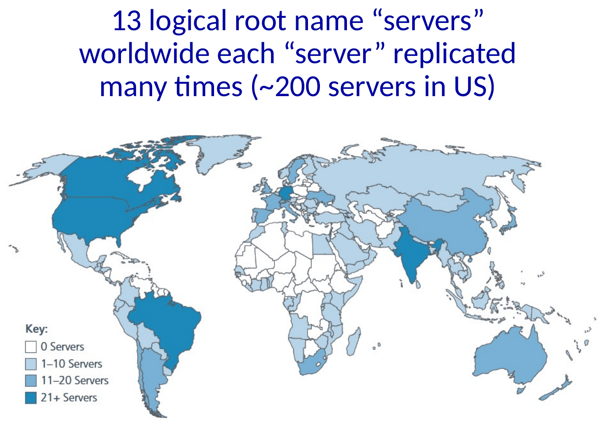
Thirteen logical root servers, a through m, run by twelve organizations, exist as more than a thousand physical instances; a query reaches the nearest copy through anycast routing. A local DNS server learns their addresses from a built-in file, not from DNS.
The DNS Message Reading
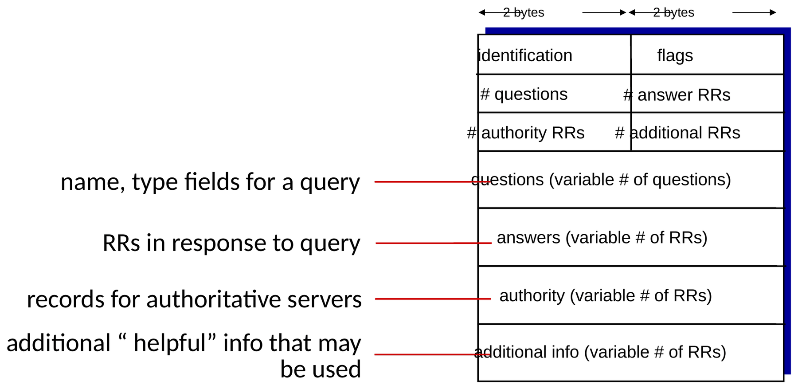
Query and reply share one format. The identification field ties a reply to its query; the flags say query or reply, recursion desired, recursion available, and whether the answer is authoritative. The authority section carries NS records, and additional carries the A records that go with them.
Registering a Domain Reading
A new company, Network Utopia, registers networkutopia.com with a registrar (accredited by ICANN), giving the names and addresses of its authoritative servers. The registrar inserts two records into the .com TLD servers:
(networkutopia.com, dns1.networkutopia.com, NS)
(dns1.networkutopia.com, 212.212.212.1, A)The company then runs dns1.networkutopia.com itself and puts into it an A record for www.networkutopia.com and an MX record for networkutopia.com. From that moment any local DNS server in the world can find the site: TLD referral, then the authoritative answer.
Reverse Lookups Reading
The other direction, address to name, uses the same tree. The address 129.7.240.18 is written with its octets reversed under a special domain, 18.240.7.129.in-addr.arpa, and a PTR record there names the host. Reversing puts the most significant octet at the top of the tree, where delegation happens.
Mail servers use reverse lookups to check that a connecting host’s name matches its address, and traceroute uses them to print names next to addresses. When traceroute prints only a number for a hop, that address has no PTR record.
Attacks on DNS Reading
DDoS on the root. In October 2002 a botnet flooded every root server with ping packets. The servers were protected by packet filters, and most local servers had the TLD addresses cached anyway, so users barely noticed. A flood aimed at TLD servers is harder to shrug off, since they cannot be bypassed.
Redirection. An attacker who can intercept queries, or feed a local server bogus replies that it caches (poisoning), sends users to a server of the attacker’s choice.
DNS as an amplifier. Small queries with a spoofed source address produce large replies at the victim’s address. DNSSEC (RFC 4033) adds signatures so a resolver can tell a forged answer from a real one.
Cache Poisoning Reading
A reply is accepted if its 16-bit identification field matches the query. If a local server issued IDs in sequence and always sent from the same port, an attacker could ask it to resolve www.bank.com, then fire a forged reply with the next ID before the real one arrived. The forgery, with a long TTL, would then be served to everyone behind that resolver until it expired.
Kaminsky’s 2008 variant asked for aaaa.bank.com, aaab.bank.com, and so on, one race per name, so losing a race cost nothing. Each forged reply carried a bogus NS record for the whole zone. Resolvers now randomize the ID and the source port, which makes a guess one in billions, and check that extra records belong to the zone asked about.
Section 2.5
Peer-to-Peer File Distribution
Today’s Plan
In class
- Distribution time: client-server vs P2P Must Know
- BitTorrent: chunks, rarest first
- Tit-for-tat and optimistic unchoking Must Know
After class Reading
- Before BitTorrent: Napster and Gnutella
- Download phases
Distributing a File
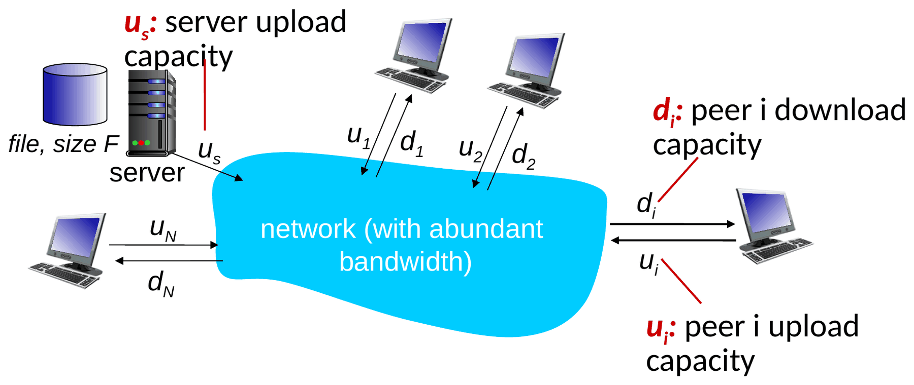
Question: how long does it take to get a file of \(F\) bits from one server to all of \(N\) peers? The server uploads at \(u_s\); peer \(i\) uploads at \(u_i\) and downloads at \(d_i\). The network core has plenty of capacity; the access links are the limit.
Client-Server Time
The server must upload \(N\) copies, one per client. One copy takes \(F / u_s\); \(N\) copies take at least \(NF / u_s\).
The slowest client must download one copy. With \(d_{\min}\) the smallest download rate, that takes at least \(F / d_{\min}\).
Both must finish, so the distribution time is at least the larger:
\[D_{cs} \ge \max\!\left\{\frac{NF}{u_s},\ \frac{F}{d_{\min}}\right\}\]
For large \(N\) the first term wins, and it grows linearly in \(N\).
Distribution Time Must Know
P2P. The server must upload at least one copy: \(F / u_s\). The slowest peer must still download one: \(F / d_{\min}\).
All peers together must download \(NF\) bits, and the total upload capacity in the system is \(u_s + \sum_i u_i\). So at least \(NF / (u_s + \sum_i u_i)\).
\[D_{P2P} \ge \max\left\{\tfrac{F}{u_s},\ \tfrac{F}{d_{\min}},\ \tfrac{NF}{u_s + \sum_i u_i}\right\} \qquad D_{cs} \ge \max\left\{\tfrac{NF}{u_s},\ \tfrac{F}{d_{\min}}\right\}\]
The third term’s numerator grows with \(N\), but so does its denominator: every new peer brings upload capacity.
Client-Server vs P2P
Every peer uploads at \(u\); the server at \(u_s = 10u\); \(F / u = 1\) hour; \(d_{\min} \ge u_s\).
At \(N = 32\): client-server needs 3.2 hours, P2P 0.76 hours.
As \(N\) grows, client-server keeps climbing and P2P levels off just under \(F / u = 1\) hour.
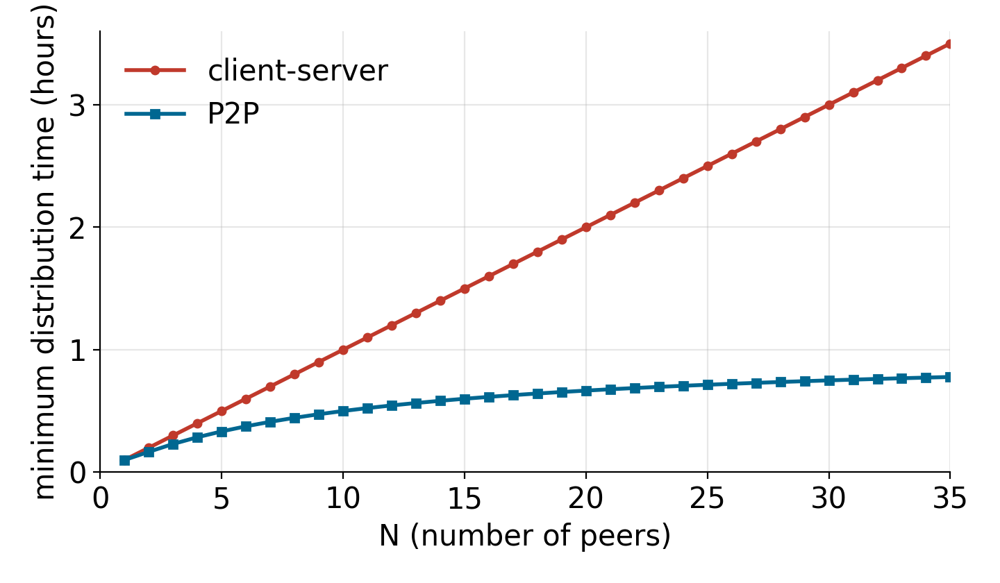
Your Turn: 20 Peers Must Know
Example: \(F = 8\) Gbits, server upload \(u_s = 20\) Mbps, every peer downloads at \(d_{\min} = 4\) Mbps and uploads at \(u = 2\) Mbps. Find the minimum distribution time under client-server and under P2P for \(N = 20\).
Solution — client-server: \(NF / u_s = 20 \times 8 \times 10^{9} / (20 \times 10^{6}) = 8000\) s; \(F / d_{\min} = 8 \times 10^{9} / (4 \times 10^{6}) = 2000\) s. \(D_{cs} = \mathbf{8000\ s}\); the server’s upload is the bottleneck.
P2P: \(F / u_s = 400\) s; \(F / d_{\min} = 2000\) s; \(NF / (u_s + Nu) = 160 \times 10^{9} / (60 \times 10^{6}) = 2667\) s. \(D_{P2P} = \mathbf{2667\ s}\); the aggregate upload is the bottleneck.
Your Turn: 20 Peers Must Know
Example (continued): Now \(N = 100\).
Solution: \(D_{cs} = \max\{40{,}000,\ 2000\} = \mathbf{40{,}000\ s}\), five times longer than before.
The third P2P term is now \(800 \times 10^{9} / (220 \times 10^{6}) = 3636\) s, so \(D_{P2P} = \max\{400,\ 2000,\ 3636\} = \mathbf{3636\ s}\).
Five times the peers cost P2P 36% more time, not 400%. As \(N\) grows the third term approaches \(F / u = 4000\) s and stays there.
BitTorrent
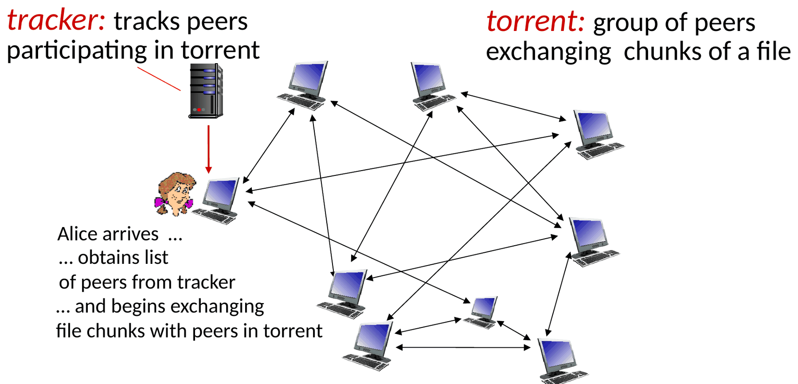
A torrent is the group of peers exchanging chunks of one file; the file is cut into 256 KB chunks. A tracker keeps the list of peers.
Alice arrives, gets a list of peers from the tracker, connects to a subset of them (her neighbors), and starts trading chunks.
Joining and Leaving
A new peer has no chunks and accumulates them over time from its neighbors.
While downloading, it uploads the chunks it has to others. It may change neighbors as it goes.
Churn: peers come and go at will. A peer that has the whole file may leave, or stay and keep uploading.
Requesting Chunks
At any moment different peers hold different subsets of the file. Periodically Alice asks each neighbor which chunks it has.
She requests the chunks she is missing rarest first: the ones the fewest of her neighbors hold.
Why rarest first, and not the chunk she needs next?
A chunk that only one peer holds disappears from the torrent if that peer leaves. Fetching rare chunks first spreads them, so the whole file stays available.
Tit-for-Tat Must Know
Alice sends chunks to the four neighbors currently sending to her at the highest rate. Everyone else is choked: they get nothing from her.
Every 10 seconds she re-ranks her neighbors and picks a new top four.
Every 30 seconds she also picks one more neighbor at random and sends to it anyway: optimistic unchoking.
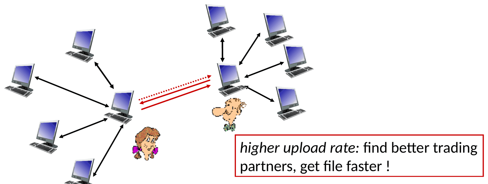
Tit-for-Tat Must Know
(1) Alice optimistically unchokes Bob. (2) Alice becomes one of Bob’s top-four providers, and Bob reciprocates. (3) Bob becomes one of Alice’s top four.
Peers that upload faster find better trading partners and finish sooner.
Your Turn: Free Rider
Bob configures his client to never upload.
Vote — can he still finish the download?
A. No; nobody unchokes a peer that sends nothing
B. Yes, but slowly
B. Every 30 seconds each neighbor picks someone at random, and sometimes that is Bob. He never enters anyone’s top four, so his download rate stays near that trickle. Uploading is not charity: it is how a peer earns its download rate.
Also: a brand-new peer with no chunks gets its first one the same way.
Read After Class
Section 2.5 — supporting material
- Before BitTorrent: Napster and Gnutella
- Download phases
Before BitTorrent Reading
A P2P file-sharing system has three jobs: search (what do I want), location (which peer has it), and download. The early systems differed in where they put the first two.
Napster (1999) kept search and location on a central server; only the download was peer to peer. Simple and searchable, but the server was a single point of failure, technically and legally.
Gnutella (2000) removed the server. A search flooded the overlay, each peer forwarding it to its neighbors up to a hop limit, so one query touched thousands of peers.
BitTorrent (2001) split the jobs: search on ordinary web sites, location at a tracker per file, download in chunks from many peers.
Download Phases Reading
A BitTorrent client changes its chunk strategy as it goes.
Start. With no chunks, the peer has nothing to trade, so it takes whatever it can get and picks a random chunk first, to have something to offer as soon as possible.
Middle. It switches to rarest first, which keeps every chunk alive in the torrent and makes the peer a useful partner, since it holds what others lack.
End. The last few chunks are requested from several peers at once, so one slow neighbor cannot stall the finish. Duplicate arrivals are discarded.
Section 2.6
Video Streaming and Content Distribution Networks
Today’s Plan
In class
- Why video is hard: scale and heterogeneity
- Playout buffering
- DASH
- CDNs, and how DNS finds a nearby copy Must Know
After class Reading
- Video coding: CBR and VBR
- Netflix
- Over-the-top challenges
Video Is the Big Consumer
Streaming video is the major consumer of Internet bandwidth, and Netflix, YouTube, and Amazon Prime are its biggest sources.
Scale. How do you reach a billion users? One giant video server cannot.
Heterogeneity. Users differ: wired or mobile, fast or slow links, and their rates change minute to minute.
The solution is a distributed, application-level infrastructure. Nothing in the network core changed to make video work.
Streaming Stored Video
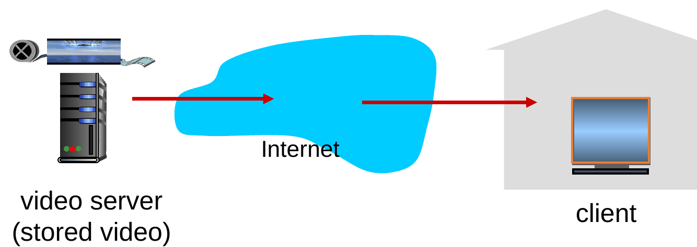
Bandwidth from server to client varies over time as congestion changes: in the house, in the access network, in the core, at the server.
Loss and delay from congestion delay playout or degrade quality.
Continuous Playout
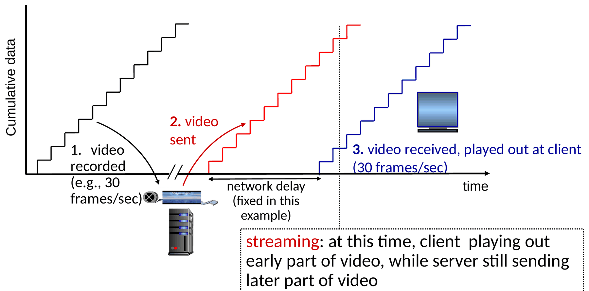
Streaming means the client plays the early part of the video while the server is still sending the later part. The wait is a few seconds, not the whole download.
Playout Buffering
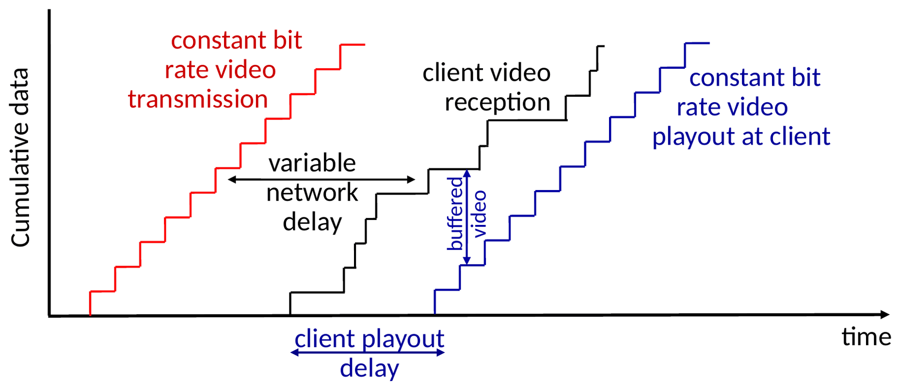
Once playout begins it must match the original timing, but network delay varies (jitter). The client buffers a few seconds before starting; the buffer absorbs the variation.
DASH
Dynamic Adaptive Streaming over HTTP
Server: divides the video into chunks of a few seconds; stores each chunk encoded at several bit rates; a manifest file lists the URL of every chunk at every rate.
Client: measures its current server-to-client bandwidth; consults the manifest; requests one chunk at a time at the highest rate the bandwidth can sustain; may pick a different rate for the next chunk.
The intelligence is at the client: it decides when to request (keep the buffer from emptying or overflowing), what rate, and where from (the closest or least-loaded server in the manifest).
Your Turn: Pick the Rate
A video is stored at 300 kbps, 1 Mbps, and 3 Mbps. The client’s measured throughput over the last chunk was 2.4 Mbps.
Vote — which encoding does it request next?
A. 3 Mbps; it is closest to 2.4
B. 1 Mbps; the highest rate under 2.4
B. At 3 Mbps the chunk arrives slower than it plays, and the buffer drains until playback freezes. At 1 Mbps chunks arrive faster than they play, and the buffer grows. If it grows for long enough, the client can gamble on 3 Mbps for a chunk and drop back if the measurement falls.
Why Not One Big Server?
Challenge: stream millions of different videos to hundreds of thousands of simultaneous users.
Option 1, a single mega-server:
- a single point of failure, and of congestion
- a long path to distant clients
- the same video sent over one link thousands of times
It does not scale. Option 2: store copies at many geographically distributed sites: a content distribution network.
CDNs: Two Philosophies
Enter deep (Akamai): push servers into many access networks, close to users. Lower delay, less backbone traffic, and a very large number of sites to manage.
Bring home (Limelight): a smaller number of large clusters at IXPs, near but not inside access networks. Cheaper to run; a somewhat longer path.
Either way the CDN stores copies of content at its nodes, and a subscriber is directed to a nearby copy, or to a different copy if the path to the nearest one is congested.
Finding a Copy Must Know
Bob wants netcinema.com/6Y7B23V, stored at KingCDN.
1–2. His browser asks the local DNS server for netcinema.com.
3. NetCinema’s DNS returns a CNAME into the CDN: a1105.kingcdn.com.
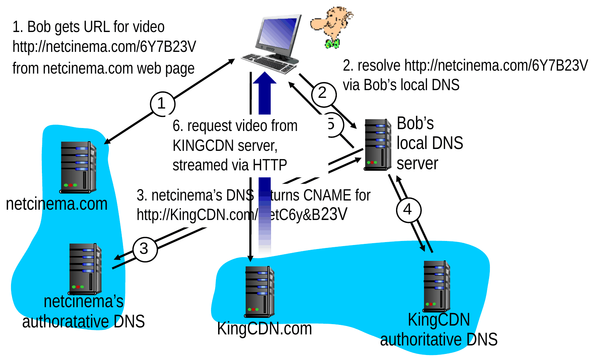
Finding a Copy Must Know
4–5. The local server resolves a1105.kingcdn.com at KingCDN’s authoritative DNS, which returns the address of a nearby CDN node.
6. Bob streams from that node over HTTP.
The hand-off from NetCinema to KingCDN is one CNAME record.
How Near Is Near?
Vote — KingCDN’s DNS server never hears from Bob. How does it know where he is?
A. The query carries Bob’s address
B. It sees the local DNS server’s address
B. The query comes from Bob’s local DNS server, and the CDN assumes Bob is near it. Usually true; false when a laptop is configured to use a public resolver on another continent, which is one reason a video can stream from the wrong side of the world.
Read After Class
Section 2.6 — supporting material
- Video coding: CBR and VBR
- Netflix
- Over-the-top challenges
Video Coding Reading
A video is a sequence of images shown at 24 or 30 per second. Coding removes redundancy within an image (a run of purple pixels becomes “purple, times \(N\)”) and between images (send only what changed since frame \(i\)).
CBR encodes at a fixed rate; VBR lets the rate follow the redundancy. Internet video runs from about 100 kbps to over 4 Mbps for HD and above 10 Mbps for 4K.
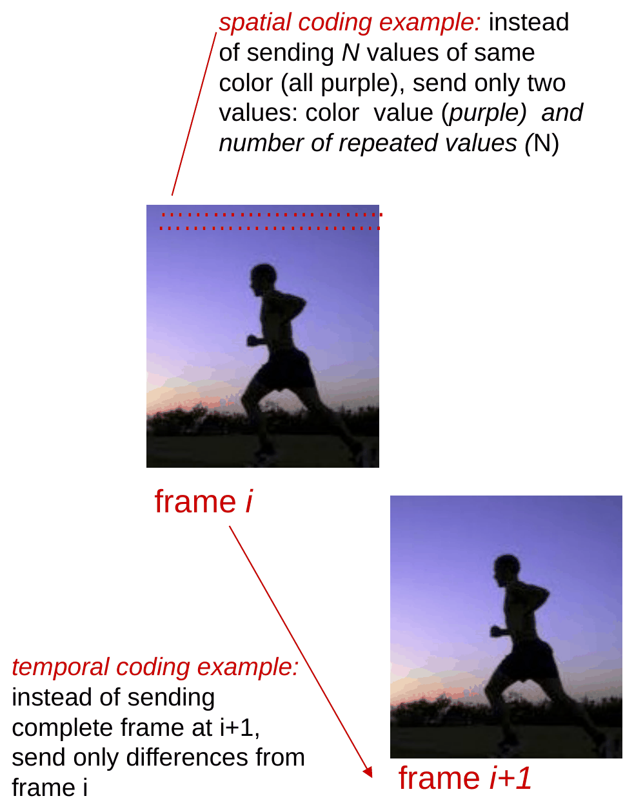
Netflix Reading
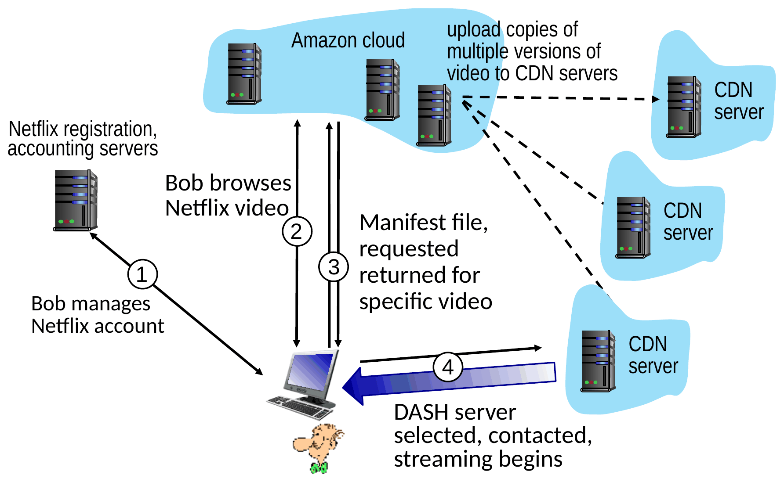
Registration and billing run in the Amazon cloud, which also encodes each title at several rates and uploads the versions to Netflix’s own CDN servers. When Bob presses play, he receives a manifest, is pointed at a DASH server, and streams from it.
Over the Top Reading
Video providers run over the top of the ISPs: they use host-to-host Internet service and get no help from the network with congestion. Three decisions are theirs:
- which CDN node a viewer fetches from, and when to switch
- what the client does when the path congests: lower rate, rebuffer, or move
- which content to place at which node; no node holds the whole catalog
DASH answers the second at the client. The other two are the CDN’s steering and placement problems, solved by measurement.
Section 2.7
Socket Programming
Today’s Plan
In class
- UDP sockets: client and server
- TCP sockets: welcoming and connection sockets
- How many sockets, and what breaks when Must Know
- Streams versus datagrams
After class Reading
- Serving many clients at once
- The same calls in C
Sockets, Again
Goal: build a client and a server that talk through sockets. Two socket types for the two transport services: UDP, unreliable datagrams; TCP, a reliable byte stream.
The example app: the client reads a line from the keyboard and sends it; the server converts it to upper case and sends it back; the client prints it.
UDP: No Connection
No handshake before sending. The sender attaches the destination IP address and port to every packet; the receiver extracts the sender’s address and port from each packet it gets.
Data may be lost or arrive out of order.
From the application’s view: unreliable transfer of groups of bytes (datagrams) between client and server.
UDP Interaction
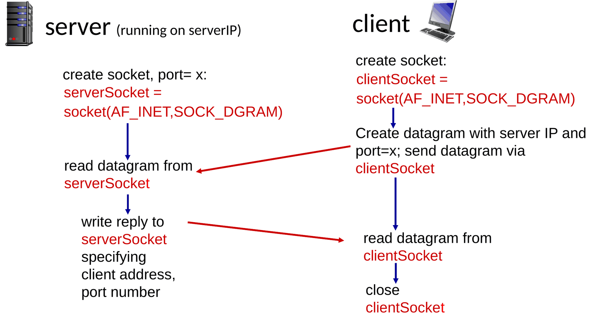
UDP Client
from socket import *
serverName = 'hostname'
serverPort = 12000
clientSocket = socket(AF_INET, SOCK_DGRAM)
message = input('Input lowercase sentence: ')
clientSocket.sendto(message.encode(), (serverName, serverPort))
modifiedMessage, serverAddress = clientSocket.recvfrom(2048)
print(modifiedMessage.decode())
clientSocket.close()SOCK_DGRAM means UDP. sendto names the destination on every call; the OS picks the client’s own port. recvfrom returns the data and who sent it.
UDP Server
from socket import *
serverPort = 12000
serverSocket = socket(AF_INET, SOCK_DGRAM)
serverSocket.bind(('', serverPort))
print('The server is ready to receive')
while True:
message, clientAddress = serverSocket.recvfrom(2048)
modifiedMessage = message.decode().upper()
serverSocket.sendto(modifiedMessage.encode(), clientAddress)bind attaches the socket to port 12000 so clients can find it. The reply goes to clientAddress, the IP and port that recvfrom handed back. One socket serves every client.
TCP: Connect First
The server must be running first, with a socket that welcomes contact.
The client creates a TCP socket naming the server’s IP and port. Creating it runs the handshake: the client’s TCP connects to the server’s TCP.
When contacted, the server’s TCP creates a new socket for that one client. The welcoming socket keeps listening, so the server can talk to many clients at once; source port numbers tell them apart (Chapter 3).
From the application’s view: a reliable, in-order byte stream, a pipe between client and server.
TCP Interaction
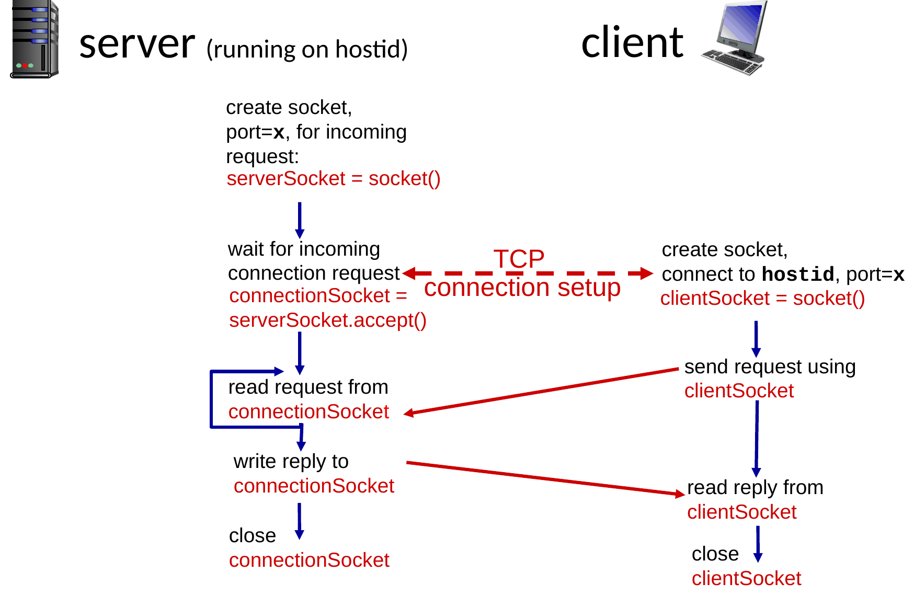
TCP Client
from socket import *
serverName = 'servername'
serverPort = 12000
clientSocket = socket(AF_INET, SOCK_STREAM)
clientSocket.connect((serverName, serverPort))
sentence = input('Input lowercase sentence: ')
clientSocket.send(sentence.encode())
modifiedSentence = clientSocket.recv(1024)
print('From Server:', modifiedSentence.decode())
clientSocket.close()SOCK_STREAM means TCP. connect performs the handshake. After that, send needs no address: the socket already knows the other end.
TCP Server
from socket import *
serverPort = 12000
serverSocket = socket(AF_INET, SOCK_STREAM)
serverSocket.bind(('', serverPort))
serverSocket.listen(1)
print('The server is ready to receive')
while True:
connectionSocket, addr = serverSocket.accept()
sentence = connectionSocket.recv(1024).decode()
capitalizedSentence = sentence.upper()
connectionSocket.send(capitalizedSentence.encode())
connectionSocket.close()accept blocks until a client connects, then returns a new socket for that client. The welcoming socket is never closed.
How Many Sockets? Must Know
TCP server with \(n\) clients: \(n + 1\) sockets. One welcoming socket, plus one connection socket per client, identified by the four-tuple (source IP, source port, destination IP, destination port).
UDP server with \(n\) clients: 1 socket. Every client’s datagrams arrive on it, each stamped with its sender.
Your Turn: What Happens?
The UDP pair from the earlier slides, with one change each time.
| Change | Result |
|---|---|
| Client started before the server | dropped at the server host; client blocks in recvfrom forever, no error |
| TCP client started before its server | connect fails at once; the handshake gets no answer |
UDP has no handshake to fail, so a missing server looks like a lost packet.
Your Turn: What Happens?
| Change | Result |
|---|---|
Client sendto uses port 12001 |
nothing listens there; dropped; the client waits forever |
Client adds bind(('', 5432)) |
works; the server replies to the port recvfrom reports |
Server’s bind port changed to 80 |
bind fails unless run as root: ports below 1024 are privileged |
The server never needs to know a client’s port in advance; the client must know the server’s.
Streams vs Datagrams
Application A calls send() ten times on a TCP socket, once per message.
Can the data cross the network in more than ten segments? Yes: a send larger than the segment size is split, and lost segments are resent. In fewer? Also yes: TCP may pack several small sends into one segment.
On a UDP socket, ten sendto() calls are exactly ten datagrams. Never fewer.
So a TCP receiver that wants A’s messages one at a time needs a framing rule the two sides agree on: a length prefix, or a delimiter such as \r\n. HTTP and SMTP both use \r\n. UDP keeps the boundaries for free.
Activity: Run the Pair
On your CloudLab VM — 10 minutes
Save the UDP server and client from the slides as udpserver.py and udpclient.py, with serverName = 'localhost'.
- Open two terminals. Run the server in one and the client in the other. Send a sentence.
- Stop the server with Ctrl-C. Run the client again. What does it do? How long did you wait before you were sure?
- Swap in the TCP pair and repeat step 2. Compare what you see.
Activity: Run the Pair
In pairs — 5 minutes
- Put your neighbor’s VM hostname in
serverNameand run your client against their server while theirs is running. - If it does not answer, write down the first thing you would check, and then check it.
Between two VMs there is a real network: an address to get right, a port that must be open, and a server that must be up before the client. The same three things fail in every assignment this term.
Read After Class
Section 2.7 — supporting material
- Serving many clients at once
- The same calls in C
Serving Many Clients Reading
The TCP server you ran handles one client at a time: while it is inside recv for client A, client B’s connection waits in the welcoming socket’s queue.
A real server does one of three things. It forks a process per connection, which is simple and isolates clients but costs a process each. It starts a thread per connection, which is cheaper and shares state, at the price of locks. Or it runs an event loop: one thread, non-blocking sockets, and a select call that says which sockets are ready. Web servers and browsers mostly take the third route.
The Same Calls in C Reading
Python’s socket module is a thin wrapper over the BSD socket calls that every OS provides.
A socket is a file descriptor, so read and write work on it. Port numbers in addr are stored in network byte order (htons). A UDP program uses SOCK_DGRAM with sendto and recvfrom, exactly as in Python.
Chapter 2: Summary
- architectures: client-server, P2P
- what apps need: reliability, throughput, delay
- what transport offers: TCP and UDP
- HTTP: connections, messages, cookies, caches, HTTP/2
- SMTP and IMAP
- DNS: hierarchy, queries, caching, records
- BitTorrent and distribution time
- DASH and CDNs
- UDP and TCP sockets
One pattern throughout: a client sends a request, the server returns data and a status code, and both agree on headers plus payload. The recurring choices: centralized or not, stateless or not, reliable or not.
What’s Next
Chapter 3 — the Transport Layer. HTTP, SMTP, and IMAP all said “use TCP” and moved on. Chapter 3 opens TCP up: how a byte stream is made reliable over a network that promises nothing, and how a sender decides how fast to go.
Two things to carry forward:
- Count round trips before you count bytes. Most web delay is waiting, not transmitting.
- When a protocol needs state, decide where it lives. HTTP put it in the messages; DNS put it in caches; BitTorrent put it in the peers.

CSCI 4306 Computer Networks